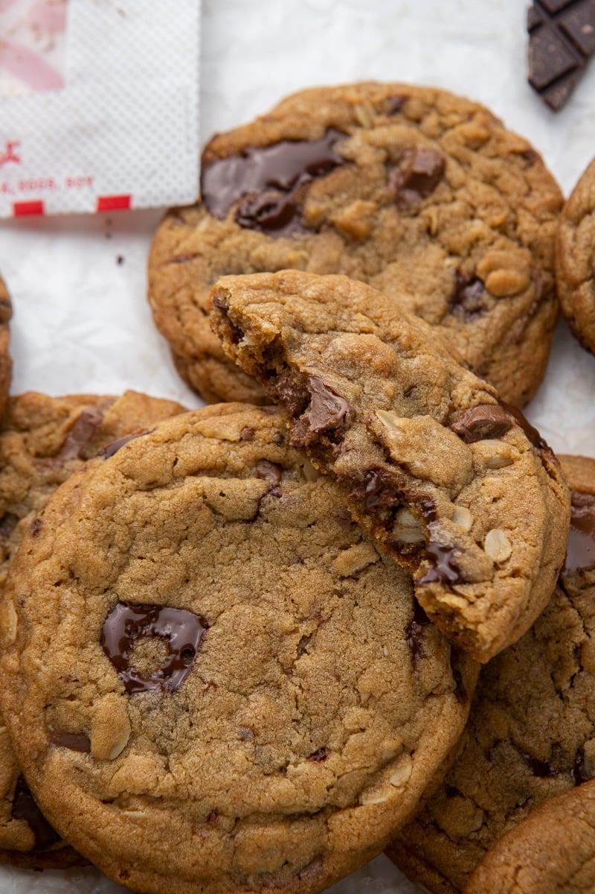

Recipe for the Best Chocolate Chip Cookies

This exceptional recipe, often compared to the famous Chick-fil-A cookies, will transport you to a world of pure delight with each delectable bite. Combining the perfect balance of buttery goodness, rich chocolate chips, and a soft, chewy texture, these cookies are the embodiment of perfection. Get ready to experience the joy of baking and savoring the best chocolate chip cookies, a treat that will leave you craving for more!
Ingredients
- 1/2 cup shortening
- 1/2 cup butter
- 1 1/4 cup brown sugar
- 1/2 cup granulated sugar
- 2 large eggs
- 2 teaspoons vanilla extract
- 3 teaspoons honey
- 1/2 teaspoon baking soda
- 1 teaspoon baking powder
- 1 teaspoon salt
- 3 cups all-purpose flour
- 3/4 cups old fashioned oats
- 3/4 cup semi sweet chocolate chunks
- 3/4 cup milk chocolate chunks
Instructions
- Cream the butter, shortening, brown sugar, and granulated sugar until combined.
- Add in the eggs, honey, and vanilla extract, and mix to combine.
- Fold in the dry ingredients, flour, oats, baking soda, baking powder, and salt just until the flour mixture disappears. Mix in the chocolate chunks until evenly distributed. Cover the bowl, and chill the cookie dough in the fridge for 1 hour.
- Preheat the oven to 350F, and line a baking sheet with parchement paper then set aside.
- Using a large cookie scooper, scoop out 16 large cookies. Split in half then mash together again with the ragged edge on top. Bake in the preheated oven for 12-13 minutes.
- Let the cookies cool down on the baking sheet for 20 minutes before transferring to a cooling rack.